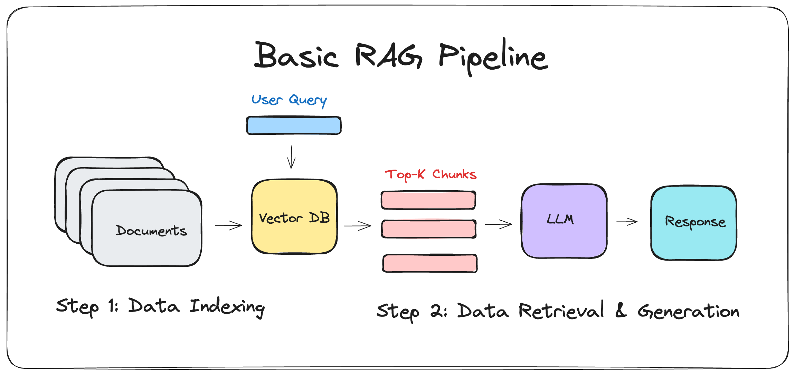

11. Retrieval-Augmented Generation (RAG)#
11.1. Practical Session 3 — Part 2: Retrieval-Augmented Generation (RAG)#
11.1.1. Introduction#
In Part 1, we learned how to interact with a language model using prompt engineering. However, LLMs have a fundamental limitation: they can only generate answers based on what they learned during training. They cannot access private documents, recent information, or domain-specific knowledge that was not part of their training data. When asked about such topics, they either refuse to answer or — worse — hallucinate: they generate plausible-sounding but entirely fabricated responses.
Retrieval-Augmented Generation (RAG) solves this problem by combining two capabilities:
Retrieval: Given a user query, search a knowledge base to find the most relevant documents or passages.
Generation: Feed the retrieved context to the LLM alongside the query, so that it can generate an answer grounded in real data.
In this session, we will build a complete RAG pipeline from scratch using open-source tools: Sentence Transformers for creating text embeddings, FAISS for efficient vector search, and the same Qwen2.5-1.5B-Instruct model from Part 1 for generation.
11.1.2. Prerequisites#
pip install torch transformers accelerate sentencepiece protobuf
pip install sentence-transformers faiss-cpu matplotlib numpy
Note
We reuse the same
Qwen/Qwen2.5-1.5B-Instructmodel loaded inbfloat16from Part 1.sentence-transformersprovides pre-trained models that encode text into dense vector representations.faiss-cpuis Facebook AI’s library for fast similarity search over vector collections. It runs entirely on CPU.No external APIs or GPU are required.
11.1.3. Why RAG? The Problem with Vanilla LLMs#
Consider this scenario: you have a 200-page company handbook and you want employees to ask questions about it using a chatbot. A vanilla LLM cannot help because:
The handbook is private — it was never in the model’s training data.
Even if it were, the model’s context window is limited (a few thousand tokens for small models), so you cannot paste the entire document into every prompt.
The model has no mechanism to search for relevant sections.
RAG addresses all three issues by introducing a retrieval step that finds the most relevant passages before passing them to the model.

Fig. 11.1 Overview of the RAG pipeline: the user query is embedded, similar documents are retrieved from a vector store, and the LLM generates an answer conditioned on the retrieved context.#
11.2. Part 1: Text Embeddings#
11.2.1. What Are Embeddings?#
An embedding is a dense vector representation of text in a continuous vector space. The key property is that semantically similar texts are mapped to nearby points in this space. For example, the sentences “The cat sat on the mat” and “A kitten was resting on the rug” should have embeddings that are close together, even though they share almost no words.
Formally, an embedding model \(E\) maps a text string \(s\) to a vector:
where \(d\) is the embedding dimension (typically 384 or 768). The similarity between two texts can then be measured using cosine similarity:
11.2.2. Loading an Embedding Model#
We will use all-MiniLM-L6-v2 from Sentence Transformers. This model produces 384-dimensional embeddings and is small enough (~80 MB) to run efficiently on CPU.
from sentence_transformers import SentenceTransformer
import numpy as np
# Load the embedding model
embedding_model = SentenceTransformer("all-MiniLM-L6-v2")
# Embed a few example sentences
sentences = [
"The cat sat on the mat.",
"A kitten was resting on the rug.",
"The stock market crashed yesterday.",
"Financial markets experienced a sharp decline.",
"I enjoy eating pizza on Fridays.",
]
embeddings = embedding_model.encode(sentences)
print(f"Embedding shape: {embeddings.shape}") # (5, 384)
print(f"Embedding dtype: {embeddings.dtype}")
11.2.3. Computing Similarities#
from sklearn.metrics.pairwise import cosine_similarity
# Compute pairwise cosine similarities
sim_matrix = cosine_similarity(embeddings)
# Display
print("Cosine Similarity Matrix:")
for i, s1 in enumerate(sentences):
for j, s2 in enumerate(sentences):
if j > i:
print(f" {sim_matrix[i, j]:.3f} | '{s1[:40]}' ↔ '{s2[:40]}'")
You should observe that semantically related sentences (cat/kitten, stock market/financial markets) have high similarity scores (~0.7–0.9), while unrelated sentences have low scores (~0.0–0.3).
11.3. Part 2: Vector Search with FAISS#
11.3.1. Why FAISS?#
Given a query embedding, we need to find the most similar document embeddings in our knowledge base. A naive approach would compare the query to every document using a loop, but this has \(O(n)\) complexity and becomes impractical for large collections. FAISS (Facebook AI Similarity Search) provides highly optimized data structures for this task, supporting both exact and approximate nearest neighbor search.
11.3.2. Building a FAISS Index#
import faiss
# Our "knowledge base" — a collection of document chunks
knowledge_base = [
"Python is a high-level programming language known for its readability and versatility.",
"Machine learning is a subset of artificial intelligence that enables systems to learn from data.",
"The Eiffel Tower is a wrought-iron lattice tower located on the Champ de Mars in Paris, France.",
"Neural networks are computing systems inspired by biological neural networks in the brain.",
"The Amazon rainforest produces approximately 20 percent of the world's oxygen.",
"Deep learning uses multiple layers of neural networks to progressively extract features from data.",
"The Great Wall of China is over 13,000 miles long and was built over many centuries.",
"Natural Language Processing (NLP) is a field of AI focused on the interaction between computers and human language.",
"Photosynthesis is the process by which plants convert sunlight into chemical energy.",
"Transfer learning allows a model trained on one task to be adapted for a different but related task.",
]
# Step 1: Encode all documents
doc_embeddings = embedding_model.encode(knowledge_base)
doc_embeddings = np.array(doc_embeddings).astype("float32")
# Step 2: Create a FAISS index
dimension = doc_embeddings.shape[1] # 384
index = faiss.IndexFlatL2(dimension) # Exact L2 (Euclidean) search
index.add(doc_embeddings)
print(f"FAISS index built with {index.ntotal} vectors of dimension {dimension}")
11.3.3. Querying the Index#
def search(query, index, knowledge_base, embedding_model, top_k = 3):
"""
Search the FAISS index for the most relevant documents.
Args:
query: The search query string
index: The FAISS index
knowledge_base: List of original document strings
embedding_model: The sentence transformer model
top_k: Number of results to return
Returns:
List of (document, distance) tuples
"""
# Encode the query
query_embedding = embedding_model.encode([query]).astype("float32")
# Search
distances, indices = index.search(query_embedding, top_k)
# Collect results
results = []
for i, (dist, idx) in enumerate(zip(distances[0], indices[0])):
results.append({
"rank": i + 1,
"document": knowledge_base[idx],
"distance": float(dist),
"index": int(idx),
})
return results
# Test queries
queries = [
"What is deep learning?",
"Tell me about famous landmarks",
"How do plants produce energy?",
]
for query in queries:
print(f"\nQuery: '{query}'")
results = search(query, index, knowledge_base, embedding_model, top_k = 3)
for r in results:
print(f" [{r['rank']}] (dist: {r['distance']:.3f}) {r['document'][:80]}...")
11.4. Part 3: Document Chunking#
11.4.1. Why Chunk Documents?#
Real-world documents (articles, reports, books) are far too long to be embedded as a single vector. Embedding a 10-page document into a single 384-dimensional vector would lose most of the fine-grained information. Instead, we split documents into smaller chunks and embed each chunk independently.
The key trade-off in chunking:
Too small (e.g., individual sentences): Loses context; the chunk might not contain enough information to answer a question.
Too large (e.g., entire pages): The embedding becomes too diluted; retrieval precision drops.
A typical sweet spot is 200–500 tokens per chunk, with some overlap between consecutive chunks to preserve context at boundaries.
11.4.2. Implementing a Chunker#
def chunk_text(text, chunk_size = 300, overlap = 50):
"""
Split text into overlapping chunks by character count.
Args:
text: The input text to chunk
chunk_size: Target size of each chunk in characters
overlap: Number of overlapping characters between chunks
Returns:
List of text chunks
"""
chunks = []
start = 0
while start < len(text):
end = start + chunk_size
chunk = text[start:end]
# Try to break at a sentence boundary
if end < len(text):
# Look for the last period, question mark, or newline
for sep in [". ", "? ", "! ", "\n"]:
last_sep = chunk.rfind(sep)
if last_sep > chunk_size // 2: # Only break if past halfway
chunk = chunk[:last_sep + 1]
end = start + last_sep + 1
break
chunks.append(chunk.strip())
start = end - overlap
return [c for c in chunks if len(c) > 20] # Filter tiny chunks
# Example
sample_document = """
Artificial intelligence (AI) has transformed the way we interact with technology.
From virtual assistants to recommendation systems, AI is everywhere in our daily lives.
Machine learning, a subset of AI, enables computers to learn from data without being
explicitly programmed. Deep learning, which uses neural networks with many layers,
has achieved remarkable results in image recognition, natural language processing,
and game playing. However, AI systems also raise important ethical questions about
bias, privacy, and the future of work. Researchers and policymakers are working
together to develop frameworks that ensure AI is developed and deployed responsibly.
The field continues to evolve rapidly, with new breakthroughs announced almost weekly.
"""
chunks = chunk_text(sample_document, chunk_size = 200, overlap = 30)
print(f"Document split into {len(chunks)} chunks:")
for i, chunk in enumerate(chunks):
print(f"\n Chunk {i + 1} ({len(chunk)} chars):")
print(f" '{chunk[:100]}...'")
11.5. Part 4: The Complete RAG Pipeline#
11.5.1. Putting It All Together#
Now we combine all the pieces: chunking → embedding → indexing → retrieval → generation. We will build a RAGSystem class that encapsulates the entire pipeline.
import torch
import faiss
import numpy as np
import time
from sentence_transformers import SentenceTransformer
from transformers import AutoModelForCausalLM, AutoTokenizer
class RAGSystem:
"""
A complete Retrieval-Augmented Generation system.
Components:
- Embedding model: Encodes text into dense vectors
- FAISS index: Stores and searches document embeddings
- LLM: Generates answers conditioned on retrieved context
"""
def __init__(self, llm_model, llm_tokenizer,
embedding_model_name = "all-MiniLM-L6-v2"):
self.llm = llm_model
self.tokenizer = llm_tokenizer
self.embedder = SentenceTransformer(embedding_model_name)
self.index = None
self.chunks = []
self.chunk_metadata = []
def add_documents(self, documents, chunk_size = 300, overlap = 50):
"""
Process and index a list of documents.
Args:
documents: List of dicts with "title" and "content" keys
chunk_size: Characters per chunk
overlap: Overlap between chunks
"""
all_chunks = []
all_metadata = []
for doc in documents:
chunks = chunk_text(doc["content"], chunk_size, overlap)
for chunk in chunks:
all_chunks.append(chunk)
all_metadata.append({"title": doc.get("title", "Unknown"), "chunk": chunk})
self.chunks = all_chunks
self.chunk_metadata = all_metadata
# Embed and index
embeddings = self.embedder.encode(all_chunks)
embeddings = np.array(embeddings).astype("float32")
dimension = embeddings.shape[1]
self.index = faiss.IndexFlatL2(dimension)
self.index.add(embeddings)
print(f"Indexed {len(all_chunks)} chunks from {len(documents)} documents")
def retrieve(self, query, top_k = 3):
"""
Retrieve the most relevant chunks for a query.
"""
query_emb = self.embedder.encode([query]).astype("float32")
distances, indices = self.index.search(query_emb, top_k)
results = []
for dist, idx in zip(distances[0], indices[0]):
results.append({
"chunk": self.chunks[idx],
"metadata": self.chunk_metadata[idx],
"distance": float(dist),
})
return results
def generate(self, query, context_chunks, max_new_tokens = 256):
"""
Generate an answer using the LLM with retrieved context.
"""
# Build the context string
context = "\n\n".join(
[f"[Source: {c['metadata']['title']}]\n{c['chunk']}" for c in context_chunks]
)
# Build the prompt
messages = [
{"role": "system", "content": (
"You are a helpful assistant that answers questions based on the provided context. "
"Use ONLY the information in the context to answer. "
"If the context does not contain the answer, say 'I cannot find this information in the provided documents.' "
"Always cite which source you used."
)},
{"role": "user", "content": f"Context:\n{context}\n\nQuestion: {query}"},
]
prompt = self.tokenizer.apply_chat_template(
messages, tokenize = False, add_generation_prompt = True
)
inputs = self.tokenizer(prompt, return_tensors = "pt").to(self.llm.device)
with torch.no_grad():
outputs = self.llm.generate(
**inputs,
max_new_tokens = max_new_tokens,
do_sample = False,
pad_token_id = self.tokenizer.eos_token_id,
)
response = self.tokenizer.decode(
outputs[0][inputs["input_ids"].shape[1]:],
skip_special_tokens = True
)
return response
def query(self, question, top_k = 3, max_new_tokens = 256, verbose = True):
"""
End-to-end RAG: retrieve + generate.
"""
t0 = time.time()
# Retrieve
retrieved = self.retrieve(question, top_k = top_k)
t_retrieve = time.time() - t0
# Generate
t1 = time.time()
answer = self.generate(question, retrieved, max_new_tokens)
t_generate = time.time() - t1
if verbose:
print(f"Question: {question}")
print(f"Retrieved {len(retrieved)} chunks in {t_retrieve:.2f}s")
for i, r in enumerate(retrieved):
print(f" [{i+1}] (dist: {r['distance']:.3f}) [{r['metadata']['title']}] {r['chunk'][:60]}...")
print(f"Generated answer in {t_generate:.2f}s")
print(f"Answer: {answer.strip()}")
return {
"question": question,
"answer": answer.strip(),
"retrieved": retrieved,
"time_retrieve": t_retrieve,
"time_generate": t_generate,
}
11.5.2. Testing the RAG System#
# Create a knowledge base about a fictional company
documents = [
{
"title": "Company Overview",
"content": """TechNova Inc. is a technology company founded in 2019 by Dr. Elena Martinez
and James Chen in San Francisco, California. The company specializes in developing AI-powered
solutions for healthcare and education. TechNova currently employs 450 people across three
offices in San Francisco, London, and Singapore. The company's mission is to democratize
access to AI technology for social good. In 2023, TechNova was valued at 2.3 billion dollars
after a successful Series C funding round led by Horizon Ventures."""
},
{
"title": "Products and Services",
"content": """TechNova's flagship product is MedAssist, an AI-powered diagnostic support
tool used by over 500 hospitals worldwide. MedAssist analyzes medical images including
X-rays, MRIs, and CT scans to help radiologists detect anomalies with 97% accuracy.
The company also offers EduBot, a personalized tutoring platform that adapts to each
student's learning pace. EduBot currently serves 2 million students in 15 countries.
TechNova's third product, DataShield, provides AI-driven cybersecurity monitoring for
enterprise clients. All products are available through a SaaS subscription model with
pricing tiers for small, medium, and enterprise customers."""
},
{
"title": "Research and Innovation",
"content": """TechNova maintains a dedicated research lab called NovAI Labs, led by
Dr. Priya Patel, with 60 researchers focused on advancing medical AI. Key research areas
include few-shot learning for rare disease detection, federated learning for privacy-preserving
medical data analysis, and multimodal AI that combines imaging with electronic health records.
In 2024, NovAI Labs published 15 peer-reviewed papers and filed 8 patents. The lab
collaborates with Stanford University, MIT, and the European Bioinformatics Institute.
TechNova invests approximately 25% of its annual revenue in research and development."""
},
{
"title": "Company Culture and Values",
"content": """TechNova operates under five core values: Innovation First, Patient Safety,
Data Privacy, Inclusive Design, and Environmental Responsibility. The company has a hybrid
work policy allowing employees to work remotely three days per week. TechNova offers
comprehensive benefits including 30 days of paid time off, parental leave of 6 months,
and a learning budget of 5,000 dollars per employee per year. The company achieved carbon
neutrality in 2023 and aims to be carbon negative by 2026. Employee satisfaction surveys
consistently show a 92% approval rating."""
},
]
# Initialize the RAG system (reusing the model and tokenizer from Part 1)
rag = RAGSystem(model, tokenizer)
rag.add_documents(documents, chunk_size = 250, overlap = 40)
# Ask questions
questions = [
"Who founded TechNova and when?",
"What is MedAssist and how accurate is it?",
"How many researchers work at NovAI Labs?",
"What is the company's remote work policy?",
"What programming language does TechNova use?", # Not in the docs
]
for q in questions:
print(f"\n{'='*60}")
result = rag.query(q)
print()
11.6. Part 5: Evaluating RAG Quality#
11.6.1. RAG vs. LLM Without Retrieval#
A critical question is: does RAG actually help? We can evaluate this by comparing answers from the LLM with and without retrieved context.
def compare_rag_vs_vanilla(rag_system, question):
"""
Compare RAG answer vs. vanilla LLM answer (no retrieval).
"""
# RAG answer
rag_result = rag_system.query(question, verbose = False)
# Vanilla answer (no context)
messages = [
{"role": "system", "content": "You are a helpful assistant. Answer the question to the best of your knowledge."},
{"role": "user", "content": question},
]
prompt = rag_system.tokenizer.apply_chat_template(
messages, tokenize = False, add_generation_prompt = True
)
inputs = rag_system.tokenizer(prompt, return_tensors = "pt").to(rag_system.llm.device)
with torch.no_grad():
outputs = rag_system.llm.generate(
**inputs, max_new_tokens = 256, do_sample = False,
pad_token_id = rag_system.tokenizer.eos_token_id,
)
vanilla_answer = rag_system.tokenizer.decode(
outputs[0][inputs["input_ids"].shape[1]:], skip_special_tokens = True
)
print(f"Question: {question}")
print(f"\n [Vanilla LLM]: {vanilla_answer.strip()[:200]}")
print(f"\n [RAG]: {rag_result['answer'][:200]}")
print()
# Compare on several questions
for q in ["Who founded TechNova?", "What is MedAssist?", "What are TechNova's core values?"]:
print(f"{'='*60}")
compare_rag_vs_vanilla(rag, q)
11.6.2. Retrieval Quality Metrics#
To evaluate retrieval quality, we can check whether the correct source document is among the top-k retrieved chunks:
def evaluate_retrieval(rag_system, test_cases, top_k = 3):
"""
Evaluate retrieval quality using known question-source pairs.
Args:
rag_system: The RAG system
test_cases: List of (question, expected_source_title) tuples
top_k: Number of chunks to retrieve
Returns:
dict: Retrieval metrics
"""
hits = 0
for question, expected_source in test_cases:
retrieved = rag_system.retrieve(question, top_k = top_k)
retrieved_sources = [r["metadata"]["title"] for r in retrieved]
hit = expected_source in retrieved_sources
if hit:
hits += 1
status = "HIT" if hit else "MISS"
print(f" [{status}] Q: '{question[:50]}' → Expected: {expected_source}, Got: {retrieved_sources}")
accuracy = hits / len(test_cases)
print(f"\nRetrieval Accuracy (top-{top_k}): {accuracy:.0%} ({hits}/{len(test_cases)})")
return accuracy
# Test cases: (question, expected source title)
test_cases = [
("Who founded the company?", "Company Overview"),
("How many employees does TechNova have?", "Company Overview"),
("What products does TechNova offer?", "Products and Services"),
("How accurate is MedAssist?", "Products and Services"),
("Who leads the research lab?", "Research and Innovation"),
("How many patents were filed?", "Research and Innovation"),
("What is the remote work policy?", "Company Culture and Values"),
("How much PTO do employees get?", "Company Culture and Values"),
]
evaluate_retrieval(rag, test_cases, top_k = 3)
11.7. Exercises#
11.7.1. Exercise 1: Building and Evaluating a RAG System#
11.7.1.1. Objectives#
Build a complete RAG system from scratch, populate it with a custom knowledge base, and evaluate its retrieval and generation quality.
11.7.1.2. Task Description#
Create a knowledge base: Write or collect at least 5 documents (each 200–500 words) on a topic of your choice. Suggested topics: a fictional university’s academic programs, a cooking recipe collection, a travel guide for a city, or documentation for a made-up software tool.
Implement the RAG pipeline: Using the
RAGSystemclass from the tutorial (or your own implementation):Chunk your documents with a chunk size of 250 characters and overlap of 40.
Build the FAISS index.
Implement the
query()method.
Evaluate retrieval: Create at least 10 test question–source pairs (questions where you know which document should be retrieved). Report the retrieval accuracy at top-1, top-3, and top-5.
Compare RAG vs. vanilla: For at least 5 questions, compare the RAG answer with the vanilla LLM answer (without retrieval). Discuss cases where RAG helps and cases where it does not.
11.7.1.3. Deliverables#
A Jupyter Notebook with the complete implementation
The knowledge base documents (either inline or as separate text files)
A retrieval accuracy table (top-1 / top-3 / top-5)
A comparison table (RAG vs. vanilla) with qualitative assessment
A discussion (2–3 paragraphs) analyzing retrieval quality and generation quality
11.7.2. Exercise 2: Chunking Strategy Analysis#
11.7.2.1. Objectives#
Investigate how different chunking strategies affect retrieval and generation quality.
11.7.2.2. Task Description#
Using the same knowledge base from Exercise 1:
Implement three chunking strategies:
Fixed-size chunks (200, 400, 600 characters) with 50-character overlap
Sentence-based chunks (group 2, 4, or 6 sentences per chunk)
Paragraph-based chunks (split on double newlines)
Evaluate each strategy: For each chunking configuration:
Report the total number of chunks generated
Measure retrieval accuracy on your test set (top-3)
Generate answers to 5 questions and assess quality
Visualize: Create a plot showing retrieval accuracy vs. chunk size.
11.7.2.3. Deliverables#
Code for all three chunking strategies
A comparison table: chunk strategy × retrieval accuracy × answer quality
A plot of retrieval accuracy vs. chunk size
A discussion (2–3 paragraphs) analyzing the trade-offs
11.7.3. Exercise 3: Advanced RAG Features#
11.7.3.1. Objectives#
Extend the basic RAG system with advanced features that improve retrieval and generation quality.
11.7.3.2. Task Description#
Implement at least two of the following enhancements:
Hybrid search: Combine semantic search (FAISS) with keyword search (e.g., TF-IDF or simple word matching). Merge the results using a weighted score.
Query expansion: Before searching, use the LLM to generate 2–3 alternative phrasings of the user’s question, retrieve results for all phrasings, and deduplicate.
Source citation: Modify the generation prompt so the LLM explicitly cites which source document each part of the answer comes from. Verify that citations are accurate.
Conversational RAG: Extend the system to handle multi-turn conversations where follow-up questions refer to previous context (e.g., “Tell me more about that” should retrieve documents related to the previous answer).
11.7.3.3. Deliverables#
A Jupyter Notebook with the implementations
Demonstrations of each feature with example queries
A comparison showing improvement over the basic RAG system
A discussion (2–3 paragraphs) on the benefits and limitations of each enhancement
11.7.3.4. Evaluation Criteria#
Correctness and robustness of the implementations
Quality of the experimental evaluation
Depth of analysis in the discussion
Code organization and documentation
11.8. References#
Lewis, P., et al. (2020). Retrieval-Augmented Generation for Knowledge-Intensive NLP Tasks. NeurIPS.
Johnson, J., Douze, M., & Jégou, H. (2019). Billion-scale similarity search with GPUs. IEEE Transactions on Big Data.
Reimers, N., & Gurevych, I. (2019). Sentence-BERT: Sentence Embeddings using Siamese BERT-Networks. EMNLP.
Gao, Y., et al. (2024). Retrieval-Augmented Generation for Large Language Models: A Survey. arXiv.
Hugging Face Documentation. Sentence Transformers. https://www.sbert.net/
FAISS Documentation. facebookresearch/faiss